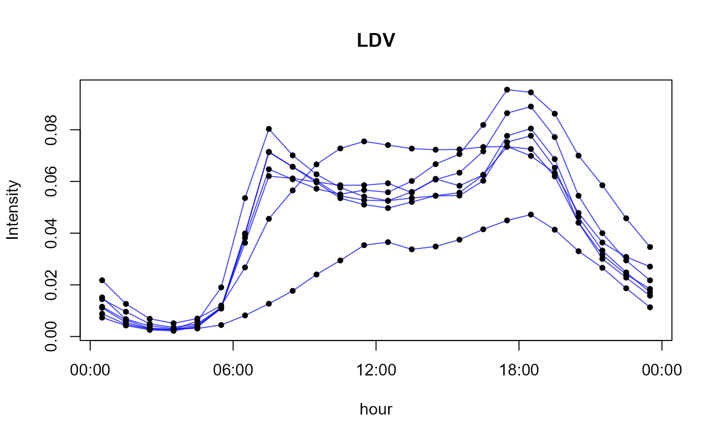
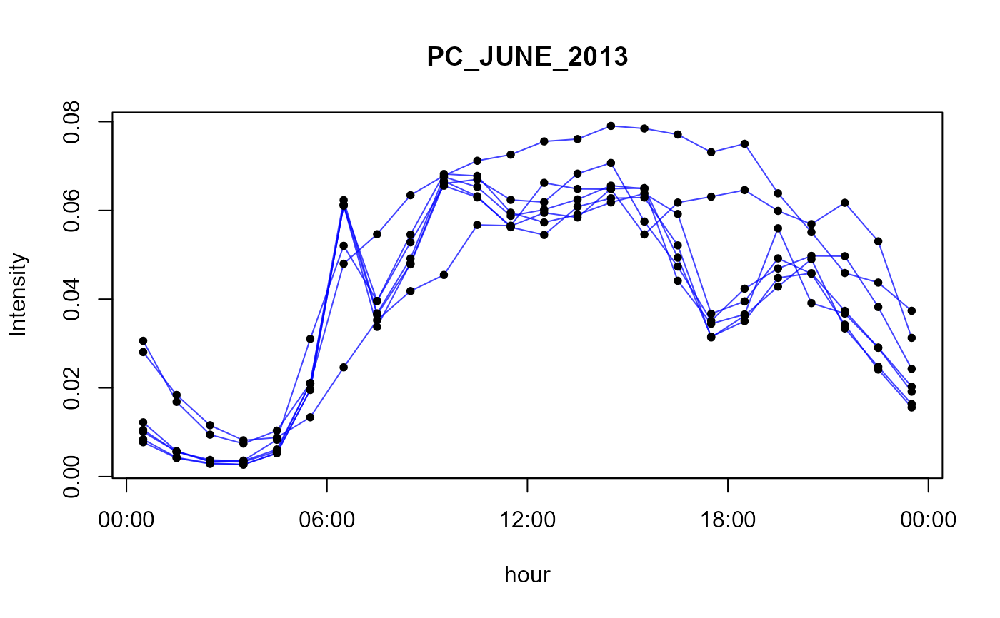
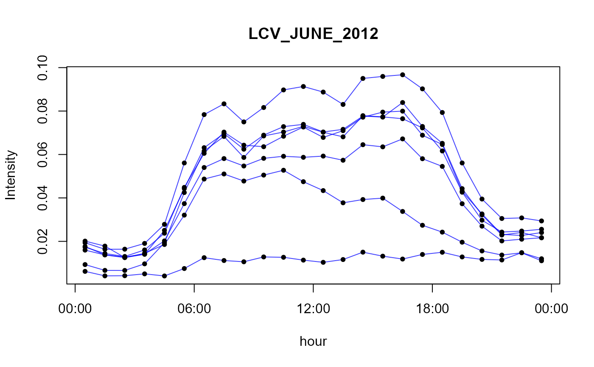
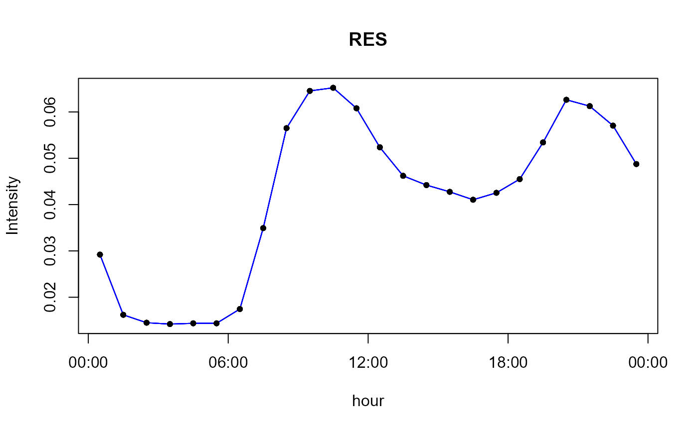
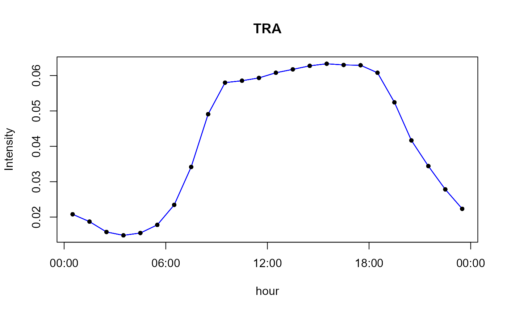
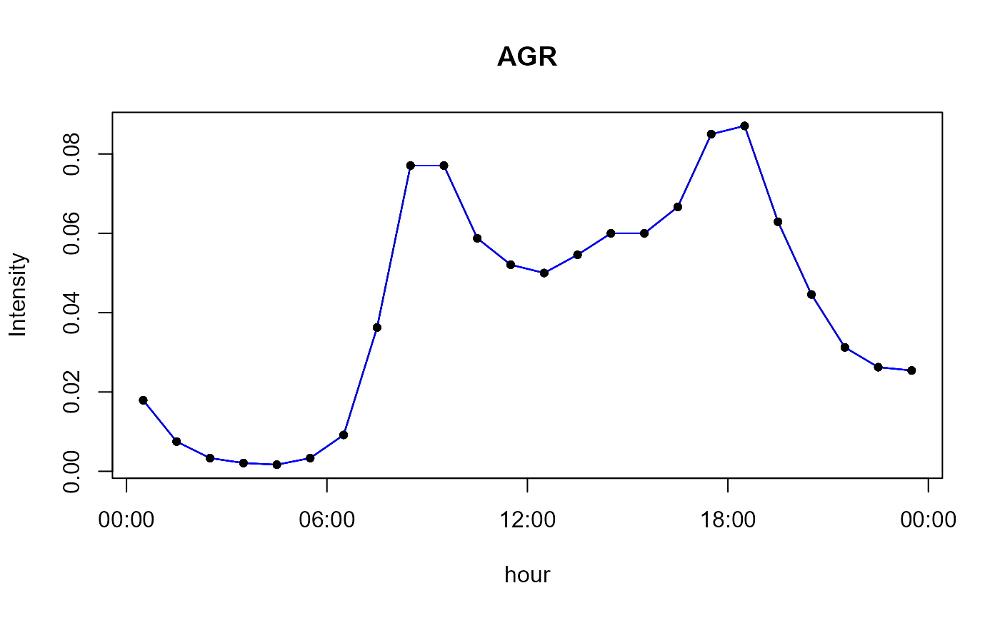
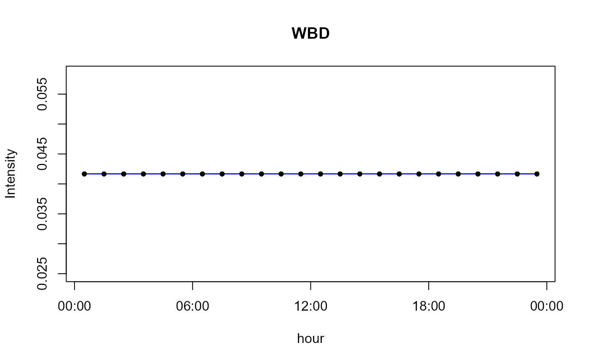

Temporal profile for emissions
perfil.RdSet of hourly profiles that represents the mean activity for each hour (local time) of the week.
- LDV
Light Duty vehicles
- HDV
Heavy Duty vehicles
- PC_JUNE_2012
passenger cars counted in June 2012
- PC_JUNE_2013
passenger cars counted in June 2013
- PC_JUNE_2014
passenger cars counted in June 2014
- LCV_JUNE_2012
light comercial vehicles counted in June 2012
- LCV_JUNE_2013
light comercial vehicles counted in June 2013
- LCV_JUNE_2014
light comercial vehicles counted in June 2014
- MC_JUNE_2012
motorcycles counted in June 2012
- MC_JUNE_2013
motorcycles counted in June 2013
- MC_JUNE_2014
motorcycles counted in June 2014
- HGV_JUNE_2012
Heavy good vehicles counted in June 2012
- HGV_JUNE_2013
Heavy good vehicles counted in June 2013
- HGV_JUNE_2014
Heavy good vehicles counted in June 2014
- PC_JANUARY_2012
passenger cars counted in january 2012
- PC_JANUARY_2013
passenger cars counted in january 2013
- PC_JANUARY_2014
passenger cars counted in january 2014
- LCV_JANUARY_2012
light comercial vehicles counted in january 2012
- LCV_JANUARY_2013
light comercial vehicles counted in january 2013
- LCV_JANUARY_2014
light comercial vehicles counted in january 2014
- MC_JANUARY_2012
Motorcycles counted in january 2012
- MC_JANUARY_2014
Motorcycles counted in january 2014
- HGV_JANUARY_2012
Heavy good vehicles counted in january 2012
- HGV_JANUARY_2013
Heavy good vehicles counted in january 2013
- HGV_JANUARY_2014
Heavy good vehicles counted in january 2014
- POW
Power generation emission profile
- IND
Industrial emission profile
- RES
Residencial emission profile
- TRA
Transport emission profile
- AGR
Agriculture emission profile
- SHP
Emission profile for ships
- SLV
Solvent use emission constant profile
- WBD
Waste burning emisssion constant profile
- PC_nov_2018
passenger cars at Janio Quadros on November 2018
- HGV_nov_2018
heavy good vehicles at Janio Quadros on November 2018
- TOTAL_nov_2018
total vehicle at Janio Quadros on November 2018
- PC_out_2018
passenger cars at Anhanguera-Castello Branco on October 2018
- MC_out_2018
Motorcycles cars at Anhanguera-Castello Branco on October 2018
data(perfil)
Format
A list of data frames with activity by hour and weekday.
Details
- Profiles 1 to 2 are from traffic count at São Paulo city from Perez Martínez et al (2014).
- Profiles 3 to 25 comes from traffic counted of toll stations located in São Paulo city, for summer and winters of 2012, 2013 and 2014.
- Profiles 26 to 33 are for different sectors from Oliver et al (2003).
- Profiles 34 to 36 are for volumetric mechanized traffic count at Janio Quadros tunnel on NOvember 2018.
- Profiles 37 to 38 are for volumetric mechanized traffic count at Anhanguera-Castello Branco on October 2018.
Note
The profile is normalized by days (but is balanced for a complete week) it means diary_emission x profile = hourly_emission.
References
Pérez-Martínez, P. J., Miranda, R. M., Nogueira, T., Guardani, M. L., Fornaro, A., Ynoue, R., & Andrade, M. F. (2014). Emission factors of air pollutants from vehicles measured inside road tunnels in São Paulo: case study comparison. International Journal of Environmental Science and Technology, 11(8), 2155-2168.
Olivier, J., J. Peters, C. Granier, G. Pétron, J.F. Müller, and S. Wallens, Present and future surface emissions of atmospheric compounds, POET Report #2, EU project EVK2-1999-00011, 2003.
Examples
# function to simple view plot.perfil <- function(per = perfil$LDV, text="", color = "#0000FFBB"){ plot(per[,1],ty = "l", ylim = range(per),axe = FALSE, xlab = "hour",ylab = "Intensity",main = text,col=color) for(i in 2:7){ lines(per[,i],col = color) } for(i in 1:7){ points(per[,i],col = "black", pch = 20) } axis(1,at=0.5+c(0,6,12,18,24),labels = c("00:00","06:00","12:00","18:00","00:00")) axis(2) box() } # view all profiles in perfil data for(i in 1:length(names(perfil))){ cat(paste("profile",i,names(perfil)[i],"\n")) plot.perfil(perfil[[i]],names(perfil)[i]) }#> profile 1 LDV#> profile 2 HDV#> profile 3 PC_JUNE_2012#> profile 4 PC_JUNE_2013#> profile 5 PC_JUNE_2014#> profile 6 LCV_JUNE_2012#> profile 7 LCV_JUNE_2013#> profile 8 LCV_JUNE_2014#> profile 9 MC_JUNE_2012#> profile 10 MC_JUNE_2013#> profile 11 MC_JUNE_2014#> profile 12 HGV_JUNE_2012#> profile 13 HGV_JUNE_2013#> profile 14 HGV_JUNE_2014#> profile 15 PC_JANUARY_2012#> profile 16 PC_JANUARY_2013#> profile 17 PC_JANUARY_2014#> profile 18 LCV_JANUARY_2012#> profile 19 LCV_JANUARY_2013#> profile 20 LCV_JANUARY_2014#> profile 21 MC_JANUARY_2012#> profile 22 MC_JANUARY_2014#> profile 23 HGV_JANUARY_2012#> profile 24 HGV_JANUARY_2013#> profile 25 HGV_JANUARY_2014#> profile 26 POW#> profile 27 IND#> profile 28 RES#> profile 29 TRA#> profile 30 AGR#> profile 31 SHP#> profile 32 SLV#> profile 33 WBD#> profile 34 PC_nov_2018#> profile 35 HGV_nov_2018#> profile 36 TOTAL_nov_2018#> profile 37 PC_out_2018#> profile 38 MC_out_2018